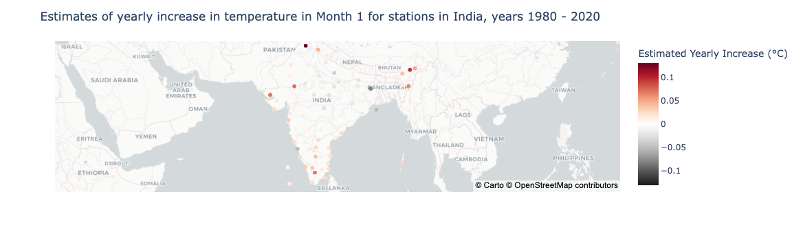
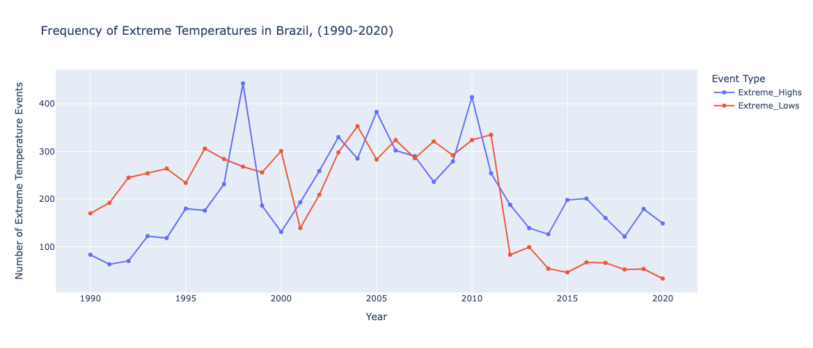
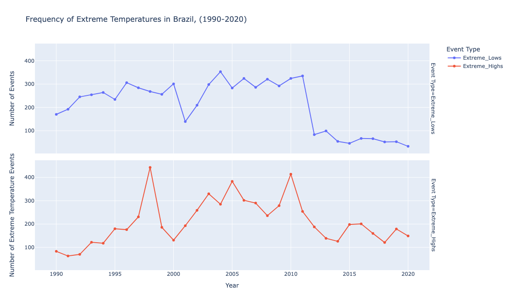
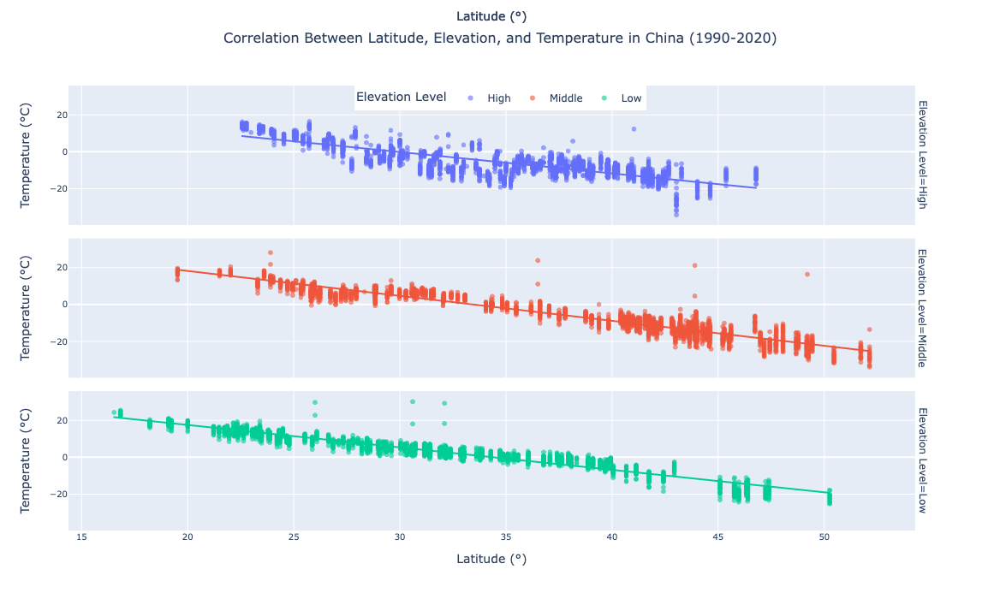
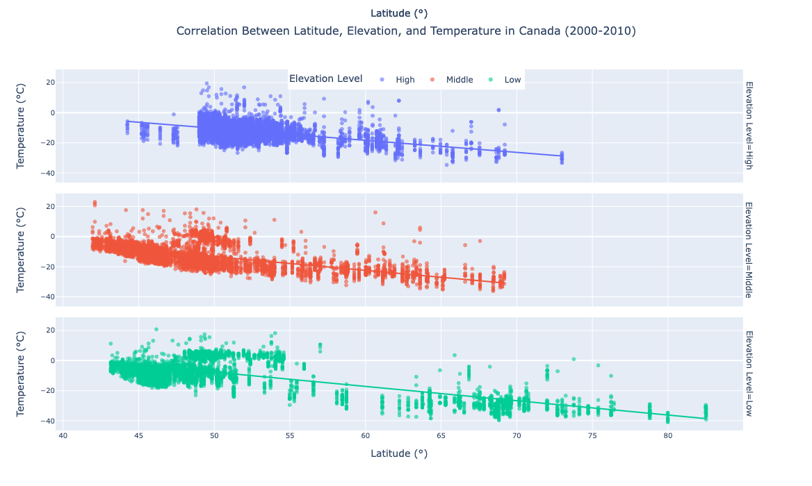

import pandas as pd
import sqlite3 
Today I’m going to be looking at the NOAA climate data we’ve been using in class, and after combining the data and storing it in a sqlite database, create several interesting, interactive data graphics!
1. Create a Database
The first step is to set up the sqlite3 database, so I’ll use import to retrieve the necessary packages.
I’ll start by creating a folder called “datafiles” and retrieve the climate data from the github url, storing the files in the folder
# create directory called 'datafiles'
import os
if not os.path.exists("datafiles"): # only if doesn't already exist
os.mkdir("datafiles")
# download the files
import urllib.request
intervals = [f"{10 * i + 1}-{10 * (i+1)}" for i in range(190, 202)]
for interval in intervals:
url = f"https://raw.githubusercontent.com/PIC16B-ucla/24F/main/datasets/noaa-ghcn/decades/{interval}.csv"
urllib.request.urlretrieve(url, f"datafiles/{interval}.csv")Now I can finally create our database using sqlite’s .connect() function, which establishes a connection to the database, hence the variable name “conn”.
I’ll name the database “climate.db”.
conn = sqlite3.connect("climate.db")Next, I’ll define a function prepare_df(df) which takes in a dataframe and cleans and reformats it from wide to long format.
def prepare_df(df):
"""
prepares a piece of wide format dataframe into a long format data frame
"""
# melt to the long format table
df = df.melt(
id_vars = ["ID", "Year"],
value_vars = [f"VALUE{i}" for i in range(1, 13)],
var_name = "Month",
value_name = "Temp"
)
# cleaning month and temp
df["Month"] = df["Month"].str[5:].astype(int)
df["Temp"] = df["Temp"] / 100
return dfNow I’ll use that function and add a table called ‘temperatures’ to my database.
intervals = [f"{10 * i + 1}-{10 * (i+1)}" for i in range(190, 202)]
for i, interval in enumerate(intervals):
filepath = f"datafiles/{interval}.csv"
df = pd.read_csv(filepath)
df = prepare_df(df)
df = df.dropna() # deal with NaN temp values
df.to_sql("temperatures", conn, if_exists = "replace" if i == 0 else "append", index = False)Here I’m reading in the data files one by one, reformatting them with prepare_df(df), dropping any NaNs, and then using sqlite’s .to_sql() function to add them (appending once the table is created) to a table called ‘temperatures’.
Next I’ll add two more tables, ‘stations’ and ‘countries’ from the data retrieved from the github urls.
# Add stations table
# retrieve the stations data from the url and read into a pandas dataframe
stations_url = "https://raw.githubusercontent.com/PIC16B-ucla/24F/refs/heads/main/datasets/noaa-ghcn/station-metadata.csv"
stations = pd.read_csv(stations_url)
# deal with NaN values
stations = stations.dropna()
# send to database
stations.to_sql("stations", conn, if_exists = "replace", index=False)27585# Add countries table
# retrieve the countries data from the url and read into a pandas dataframe
countries_url = "https://raw.githubusercontent.com/mysociety/gaze/master/data/fips-10-4-to-iso-country-codes.csv"
countries = pd.read_csv(countries_url)
# deal with NaN values
countries = countries.dropna()
# send to database
countries.to_sql("countries", conn, if_exists = "replace", index=False)278Now let’s check if the three tables I created were added to the database correctly. I’ll use .execute() to run a SQL command that selects the name of each table in the database.
cursor = conn.cursor()
cursor.execute("SELECT name FROM sqlite_master WHERE type='table'")
print(cursor.fetchall())[('temperatures',), ('stations',), ('countries',)]Nice! Let’s also check the contents of each table.
cursor.execute("SELECT sql FROM sqlite_master WHERE type='table';")
for result in cursor.fetchall():
print(result[0])CREATE TABLE "temperatures" (
"ID" TEXT,
"Year" INTEGER,
"Month" INTEGER,
"Temp" REAL
)
CREATE TABLE "stations" (
"ID" TEXT,
"LATITUDE" REAL,
"LONGITUDE" REAL,
"STNELEV" REAL,
"NAME" TEXT
)
CREATE TABLE "countries" (
"FIPS 10-4" TEXT,
"ISO 3166" TEXT,
"Name" TEXT
)With the database created and tables added, I can move onto the next step.
2. Write a Query Function
In a separate .py file, I’ve writted a function query_climate_database() that takes a database file, country, start year, end year, and month, and queries the database to retrieve NAME, LATITUDE,LONGITUDE, Country, Year, Month, and Temp.
import sqlite3
import pandas as pd
def query_climate_database(db_file, country, year_begin, year_end, month):
# establish connection to database
conn = sqlite3.connect(db_file)
# define SQL query
cmd = f"""
SELECT S.NAME, S.LATITUDE, S.LONGITUDE, C.Name AS Country, T.Year, T.Month, T.Temp
FROM stations S
INNER JOIN countries C ON SUBSTR(S.ID, 1, 2) = C."FIPS 10-4"
INNER JOIN temperatures T ON T.ID = S.ID
WHERE C.Name = '{country}'
AND T.Year BETWEEN {year_begin} AND {year_end}
AND T.Month = {month}
ORDER BY S.NAME
"""
# send SQL query to database, store in dataframe
df = pd.read_sql_query(cmd, conn)
# close connection
conn.close()
return df Note how with INNER JOIN countries C ON SUBSTR(S.ID, 1, 2) = C."FIPS 10-4" I’m joining countries’ FIPS 10-4 column with the first two chars of stations’ ID (which corresponds to FIPS 10-4).
# import query_climate_database and check its contents
from climate_database import query_climate_database
import inspect
print(inspect.getsource(query_climate_database))def query_climate_database(db_file, country, year_begin, year_end, month):
# establish connection to database
conn = sqlite3.connect(db_file)
# define SQL query
cmd = f"""
SELECT S.NAME, S.LATITUDE, S.LONGITUDE, C.Name AS Country, T.Year, T.Month, T.Temp
FROM stations S
INNER JOIN countries C ON SUBSTR(S.ID, 1, 2) = C."FIPS 10-4"
INNER JOIN temperatures T ON T.ID = S.ID
WHERE C.Name = '{country}'
AND T.Year BETWEEN {year_begin} AND {year_end}
AND T.Month = {month}
ORDER BY S.NAME
"""
# send SQL query to database, store in dataframe
df = pd.read_sql_query(cmd, conn)
# close connection
conn.close()
return df
Let’s test that the query_climate_database() function works correctly
df = query_climate_database(db_file = "climate.db",
country = "India",
year_begin = 1980,
year_end = 2020,
month = 1)
df.head()| NAME | LATITUDE | LONGITUDE | Country | Year | Month | Temp | |
|---|---|---|---|---|---|---|---|
| 0 | AGARTALA | 23.883 | 91.25 | India | 1980 | 1 | 18.21 |
| 1 | AGARTALA | 23.883 | 91.25 | India | 1981 | 1 | 18.25 |
| 2 | AGARTALA | 23.883 | 91.25 | India | 1982 | 1 | 19.31 |
| 3 | AGARTALA | 23.883 | 91.25 | India | 1985 | 1 | 19.25 |
| 4 | AGARTALA | 23.883 | 91.25 | India | 1988 | 1 | 19.54 |
3. Write a Geographic Scatter Function for Yearly Temperature Increases
Now with my database setup and a query function to select the data I want, I’ll try to answer the question ‘How does the average yearly change in temperature vary within a given country?’ by making a geographic scatter function for yearly temperature increases.
import plotly.express as px
import numpy as np
from sklearn.linear_model import LinearRegressionMy function temperature_coefficient_plot() takes in 7 arguments: db_file, country, year_begin, year_end, month, min_obs, **kwargs(additional arguments for the scatter_mapbox.
- It first uses the query_climate_database() function to retrieve the necessary data from the database and filter it based on the min_obs argument .
- Next, I define a function called slope_coeffieicent which calculates the linear regression coeficient, or how much temperature is expected to change per year, at a given station.
- Using that function, I then apply it to each station within my data to get the coefficients for each stations
- Then, I create the scatter_mapbox, assigning the color to the estimated yearly increase (coefficients), and add a few settings like carto-positron as the default mapbox_style, and zoom.
- Finally, I return the scatter_mapbox figure.
def temperature_coefficient_plot(db_file, country, year_begin, year_end, month, min_obs, **kwargs):
# get data from SQL query
df = query_climate_database(db_file = "climate.db",
country = "India",
year_begin = 1980,
year_end = 2020,
month = 1)
# select stations with >= min_obs years of data
station_count = df.groupby('NAME')['Year'].count()
stations = df[df['NAME'].isin(station_count[station_count >= min_obs].index)].copy()
# function to calculate the linear regression coefficient (how much temp changed per year) at a given station
def slope_coefficient(stations):
X = stations['Year'].values.reshape(-1, 1) # Year as X axis
y = stations['Temp'].values # Temp as Y axis
model = LinearRegression()
model.fit(X, y)
return pd.Series({'Estimated_Yearly_Increase': model.coef_[0]}) # return coefficient
# get the coefficients for all stations and add to stations df
station_slopes = stations.groupby("NAME")[['Year', 'Temp']].apply(slope_coefficient).reset_index()
stations = stations.merge(station_slopes[['NAME', 'Estimated_Yearly_Increase']], on='NAME', how='left')
# deal with NaNs
stations = stations.dropna(subset=['Estimated_Yearly_Increase'])
#create scatter_mapbox plot
fig = px.scatter_mapbox(
stations,
lat = 'LATITUDE',
lon = 'LONGITUDE',
color = 'Estimated_Yearly_Increase',
hover_name = 'NAME',
hover_data = {'Estimated_Yearly_Increase': ':.4f'}, # rount to 4 decimal places
color_continuous_midpoint = 0,
**kwargs
)
# mapbox_settings
fig.update_layout(
mapbox_style=kwargs.get('mapbox_style', 'carto-positron'),
mapbox_zoom=kwargs.get('zoom', 2),
title = f"Estimates of yearly increase in temperature in Month {month} for stations in {country}, years {year_begin} - {year_end}",
coloraxis_colorbar = dict(title="Estimated Yearly Increase (°C)")
)
return figI’ll test my function to see yearly increase in India in January in years 1980 to 2020. The color_map is an additional argument passed via **kwargs.
color_map = px.colors.diverging.RdGy_r # choose a colormap
fig = temperature_coefficient_plot("climate.db","India", 1980, 2020, 1,
min_obs = 10,
zoom = 2,
mapbox_style="carto-positron",
color_continuous_scale=color_map)
fig.show()
Voila! I now have a geographic visualization of the average yearly temperature increases within a given country.
Figure # 2
Now I’ll make another graphic and try to answer the question: ‘What is the frequency of extreme temperatures over time within a given country?’
I’ll start by writing a new query function, this time to select NAME, LATITUDE, LONGITUDE, Year, and Temp data from my database.
def query_extreme_temps(db_file, country, year_begin, year_end):
# define the query
cmd = f"""
SELECT S.NAME, S.LATITUDE, S.LONGITUDE, T.Year, T.Temp
FROM stations S
INNER JOIN temperatures T ON S.ID = T.ID
INNER JOIN countries C ON SUBSTR(S.ID, 1, 2) = C."FIPS 10-4"
WHERE C.Name = '{country}' AND
T.Year BETWEEN {year_begin} AND {year_end}
ORDER BY T.Year
"""
# Connect to the database and execute the query
with sqlite3.connect(db_file) as conn:
df = pd.read_sql_query(cmd, conn)
# Calculate the 90th and 10th percentiles (above and below are extreme)
high_threshold = df['Temp'].quantile(0.90)
low_threshold = df['Temp'].quantile(0.10)
return df, high_threshold, low_thresholdNotice that my function I also calculated and returned two vectors, high_threshold and low_threshold. Since I’m trying to analyze extreme temperatures over time, I’ve defined extreme temperatures as anything above the 90th percentile and below the 10 percentile of temperatures.
Let’s test that my query function works.
df, high, low = query_extreme_temps("climate.db", "Brazil", 1990, 2020)
df.head()| NAME | LATITUDE | LONGITUDE | Year | Temp | |
|---|---|---|---|---|---|
| 0 | FERNANDO_DE_NORONHA | -3.850 | -32.417 | 1990 | 27.38 |
| 1 | CONCEICAO_DO_ARAGUAIA | -8.250 | -49.280 | 1990 | 27.44 |
| 2 | CUIABA | -15.550 | -56.117 | 1990 | 27.44 |
| 3 | RIO_DE_JANEIRO | -22.917 | -43.167 | 1990 | 28.94 |
| 4 | PORTO_DE_MOZ | -1.733 | -52.233 | 1990 | 27.38 |
high28.49low18.99Great. So for Brazil from 1990 to 2020, anything above 28.49 degrees and anything below 18.99 degrees is extreme. Let’s define a function to calculate the frequency of these extreme events.
def extreme_temp_frequency(df, high_threshold, low_threshold):
# classify temperatures as extreme high or low
df['Extreme_High'] = df['Temp'] > high_threshold
df['Extreme_Low'] = df['Temp'] < low_threshold
# count the number of extreme temperatures by year
yearly_extremes = df.groupby('Year').agg(
Extreme_Highs=('Extreme_High', 'sum'),
Extreme_Lows=('Extreme_Low', 'sum')
).reset_index()
return yearly_extremesNow I can define my plotting function. I’ll have it take 5 arguments: db_file, country, year_begin, year_end.
- First it retrieves the dataframe, high and low thresholds from the query function.
- Next, it passes those to the extreme_temp_frequency() function to get a dataframe with the frequency of extreme events.
- Then, using px.line() it plots Year as the independent variable vs Frequency as the dependent variable, creating one line for Extreme highs and one for Extreme lows.
Finally, it updates some settings like hovertemplate and legend_title, and then returns the figure.
def plot_extreme_temp_frequency(db_file, country, year_begin, year_end):
# get data from SQL query
df, high_threshold, low_threshold = query_extreme_temps(db_file, country, year_begin, year_end)
# get frequency of extreme temperatures per year
yearly_extremes = extreme_temp_frequency(df, high_threshold, low_threshold)
# create line plot
fig = px.line(
yearly_extremes,
x='Year',
y= ['Extreme_Highs', 'Extreme_Lows'],
category_orders={"Event Type": ["Extreme_Lows", "Extreme_Highs"]}, # maintains order for coloring
title=f"Frequency of Extreme Temperatures in {country}, ({year_begin}-{year_end})",
labels={'value': 'Number of Extreme Events', 'variable': 'Event Type'},
markers=True,
height = 500
)
# set hover to number of events
fig.update_traces(hovertemplate='%{y}')
# line plot settings
fig.update_layout(
yaxis_title="Number of Extreme Temperature Events",
xaxis_title="Year",
legend_title="Event Type",
hovermode= "x",
hoverlabel=dict(
bgcolor="white",
font_size=16,
font_family="Rockwell"
)
)
return figLets see what the extreme events were like in Brail from 1990 to 2020.
plot_extreme_temp_frequency("climate.db", "Brazil", 1990, 2020)
Okay. Not bad. I think it’s a little hard to read, so I’ll adjust it using facet_row so that there are two graphs, one for extreme highs and one for extreme lows
def plot_extreme_temp_frequency(db_file, country, year_begin, year_end):
# get data from SQL query
df, high_threshold, low_threshold = query_extreme_temps(db_file, country, year_begin, year_end)
# get frequency of extreme temperatures per year
yearly_extremes = extreme_temp_frequency(df, high_threshold, low_threshold)
# Melt data for easier faceting
yearly_extremes = yearly_extremes.melt(id_vars='Year', value_vars=['Extreme_Highs', 'Extreme_Lows'],
var_name='Event Type', value_name='Number of Events')
# create line plot
fig = px.line(
yearly_extremes,
x='Year',
y= 'Number of Events',
color='Event Type', # set color based on highs/lows
category_orders={"Event Type": ["Extreme_Lows", "Extreme_Highs"]},
title=f"Frequency of Extreme Temperatures in {country}, ({year_begin}-{year_end})",
labels={'value': 'Number of Extreme Events', 'variable': 'Event Type'},
markers=True,
facet_row = 'Event Type', # one graph for each event type (extreme high/extreme low)
height = 700
)
# set hover to number of events
fig.update_traces(hovertemplate='%{y}')
# line plot settings
fig.update_layout(
yaxis_title="Number of Extreme Temperature Events",
xaxis_title="Year",
legend_title="Event Type",
hovermode= "x",
hoverlabel=dict(
bgcolor="white",
font_size=16,
font_family="Rockwell"
)
)
return figplot_extreme_temp_frequency("climate.db", "Brazil", 1990, 2020)Now lets see the Brazil’s climate data again.

Cool! It looks there’s a rough pattern where the years that had extreme highs also had extreme lows!
Figure #3
For my next graphic I want to explore the question: ‘What’s the relationship between latitude and elevation on temperatures?’
Like before, I’ll start by defining a new query function. Here I’m interested in Country, Station, Elevation, Latitude, Year, and Temp.
# create new query function
def query_temp_elevation(db_file, country, year_begin, year_end):
cmd = f"""
SELECT C.Name AS Country, S.NAME AS Station, S.STNELEV AS Elevation, S.LATITUDE AS Latitude, T.Year, T.Temp
FROM temperatures T
JOIN stations S ON T.ID = S.ID
JOIN countries C ON SUBSTR(S.ID, 1, 2) = C."FIPS 10-4"
WHERE C.Name = '{country}' AND T.Year BETWEEN {year_begin} AND {year_end}
GROUP BY S.NAME, T.Year
ORDER BY T.Year;
"""
with sqlite3.connect(db_file) as conn:
df = pd.read_sql_query(cmd, conn)
# Classify elevation types (low, middle, high) using quantiles
elevation_quantiles = df["Elevation"].quantile([0.33, 0.66])
def classify_elevation(elevation):
if elevation <= elevation_quantiles[0.33]:
return 'Low'
elif elevation <= elevation_quantiles[0.66]:
return 'Middle'
else:
return 'High'
df["Elevation_Type"] = df["Elevation"].apply(classify_elevation)
return dfI want to look at 3 variables at once, latitude and elevation, and temperature, so I plan to use a scatterplot. But first I need to make elevation into a categorical variable. In my query function, I classify each elevation as one of 3 types (low, middle, or high) using the .quantile function like before, and add a new column to my data called “Elevation_Type”.
Let’s check if it works.
df = query_temp_elevation("climate.db", "China", 1990, 2000)
df.head()| Country | Station | Elevation | Latitude | Year | Temp | Elevation_Type | |
|---|---|---|---|---|---|---|---|
| 0 | China | ABAG_QI | 1128.0 | 44.017 | 1990 | -24.07 | High |
| 1 | China | AIHUI | 166.0 | 50.250 | 1990 | -24.75 | Low |
| 2 | China | AKQI | 2300.0 | 40.780 | 1990 | -7.20 | High |
| 3 | China | ALAR | 1013.0 | 40.500 | 1990 | -6.88 | Middle |
| 4 | China | ALTAY | 737.0 | 47.733 | 1990 | -14.42 | Middle |
Next I can define my plotting function taking the following inputs: db_file, country, year_begin, year_end.
- First I use the query function to get the database.
- then using the px.scatter function, I create a scatterplot setting Latitude as the X axis, Temp as Y, and color based on the Elevation Type.
- like before I use facets to create 3 separate plots, one for each elevation type.
- Lastly, I add a trendline, update the layout, and return the figure.
def plot_latitude_temp_elevation(db_file, country, year_begin, year_end):
df = query_temp_elevation(db_file, country, year_begin, year_end)
fig = px.scatter(df,
x="Latitude",
y="Temp",
color="Elevation_Type",
opacity=0.6,
height=700,
facet_row="Elevation_Type", # facet by Elevation type
category_orders={"Elevation_Type": ["High", "Middle", "Low"]}, # ensures facets are shown in this order
labels={"Temp": "Temperature (°C)", "Latitude": "Latitude (°)", "Elevation_Type": "Elevation Level"},
title=f"Correlation Between Latitude, Elevation, and Temperature in {country} ({year_begin}-{year_end})",
trendline="ols") # add a trendline
fig.update_layout(
title=dict(x=0.5, xanchor="center", font=dict(size=16)),
legend=dict(title="Elevation Level", orientation="h", y=1.0, x=0.5, xanchor="center"),
)
fig.update_yaxes(title_text="Temperature (°C)", tickfont=dict(size=10))
fig.update_xaxes(title_text="Latitude (°)", tickfont=dict(size=10))
return figfig = plot_latitude_temp_elevation("climate.db", "China", 1990, 2020)
fig.show()Let’s see how latitude and elevation affect temperature in China from 1990-2020.

How about Canada from 2000-2010?
fig = plot_latitude_temp_elevation("climate.db", "Canada", 2000, 2010)
fig.show()
There’s quite a bit we can learn from these graphs!
- Across all elevation levels, there is a negative correlation between latitude and temperature. As latitude increases (moving further north), temperatures generally decrease.
- High Elevation: The temperature values are mostly clustered below 0°C, with many points falling below -20°C, suggesting that high-elevation areas are significantly cooler overall.
- Middle Elevation: The temperature range is more moderate, roughly between 0°C and 20°C, indicating a more temperate climate at middle elevations.
- Low Elevation: Temperatures are generally warmer, with most values above 0°C and some reaching over 20°C, showing how lower elevations tend to be warmer.